Covariance-pooling checks across outcome families
Source:vignettes/articles/covariance-pooling.Rmd
covariance-pooling.RmdWhat these plots compare
Two models allow different means and actor and partner effects for female-female, female-male, and male-male dyads. The pooled model uses one exchangeable covariance for all dyads. The full model estimates a separate covariance for each composition. We make pooling wrong by changing the female/male SD ratio in female-male dyads or the partner correlations across compositions. These changes leave the pooled covariance unchanged. The partner-dependence study shows how often the check detects an omitted partner correlation.
-
Orange: composition checks of the pooled model,
check_partner_dependence(role = gender). A flag means at least one of 14 summaries lies outside its middle 95% simulated range. -
Green: model comparison of the pooled and full
models, a likelihood-ratio test at 5% with
compare_nested_models(). - Grey (false-alarm plots of other families): the same checks of the full model, which has the correct structure.
When pooling was correct, composition checks raised false alarms in 10–29% of datasets, and model comparison in 1–16%. The checks flagged wrong pooling more often than model comparison in most settings, partly because of these extra false alarms. Allowing for them, the checks mostly did better for Gaussian outcomes with up to 200 dyads, and model comparison usually did better for the other families with 400 dyads. For the other families with 40 dyads, the checks flagged 14–21% of correctly pooled datasets, and no more than 22–35% of wrongly pooled ones, depending on the family. So a flag or its absence says little.
Use model comparison when both models can be fitted. The checks show
where a simpler model misfits and still work when the full model cannot
be fitted. Checking all dyads together (role = NULL) rarely
flagged anything: at most 9% in any condition.
Study details
Gaussian outcomes have the covariance on the outcome scale, with residual SDs of 1 and partner correlations of 0.3 under correct pooling. For the other families, each partner has a Gaussian latent effect on the log scale, with SDs of 0.6 and correlations of 0.3 under correct pooling. Outcomes are then drawn from the family. These families passed a fitting and recovery screen of 21 candidates.
Dyads are split roughly equally among the three compositions, so 100 total dyads means about 33 per composition. Predictors are standard normal, with partner correlation 0.3. Mean coefficients differ by role and composition, and the mean model is correct throughout. In practice, omitted predictors can also cause mismatches.
Checks subtract fitted fixed-effect predictions and use simulations from the fitted model, without refitting. Failed fits, convergence or Hessian problems, and unavailable checks are excluded. For the other families, all methods use the same datasets: those where both checks and the model comparison were available. The pooled model could be checked in nearly all datasets, but the full model often had no usable fit with 40 or 100 dyads.
The report uses saved results. See the study code for Gaussian outcomes and other families, the plot code, and the study notes.
Gaussian
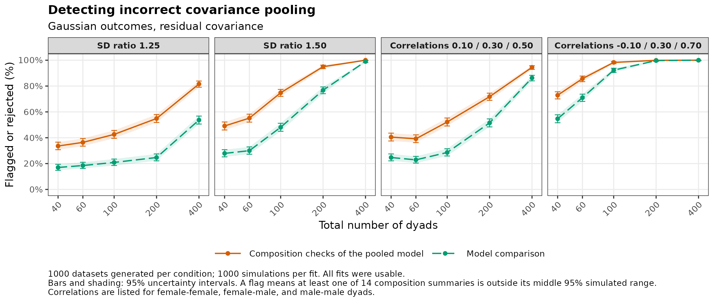
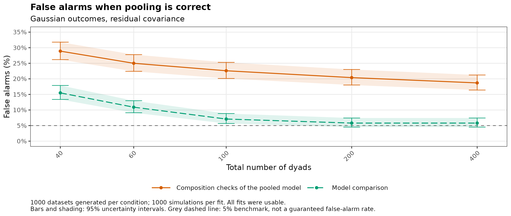
Model settings and checks
All 60,000 fits were usable. The table also counts flags on a summary that truly differed, in the expected direction, and results with unequal group sizes (20 female-female, 60 female-male, and 20 male-male dyads).
| Setting | Dyads | Any flag | Flag in expected direction | Model comparison |
|---|---|---|---|---|
| SD ratio 1.25 | 100 | 43% | 35% | 21% |
| SD ratio 1.25 | 100 (20 / 60 / 20) | 56% | 46% | 29% |
| SD ratio 1.25 | 400 | 82% | 80% | 54% |
| SD ratio 1.50 | 100 | 75% | 70% | 48% |
| SD ratio 1.50 | 100 (20 / 60 / 20) | 93% | 91% | 73% |
| SD ratio 1.50 | 400 | 100% | 100% | 99% |
| Correlations 0.10 / 0.30 / 0.50 | 100 | 52% | 45% | 29% |
| Correlations 0.10 / 0.30 / 0.50 | 100 (20 / 60 / 20) | 46% | 40% | 20% |
| Correlations 0.10 / 0.30 / 0.50 | 400 | 94% | 94% | 86% |
| Correlations -0.10 / 0.30 / 0.70 | 100 | 98% | 98% | 92% |
| Correlations -0.10 / 0.30 / 0.70 | 100 (20 / 60 / 20) | 88% | 87% | 69% |
| Correlations -0.10 / 0.30 / 0.70 | 400 | 100% | 100% | 100% |
Poisson
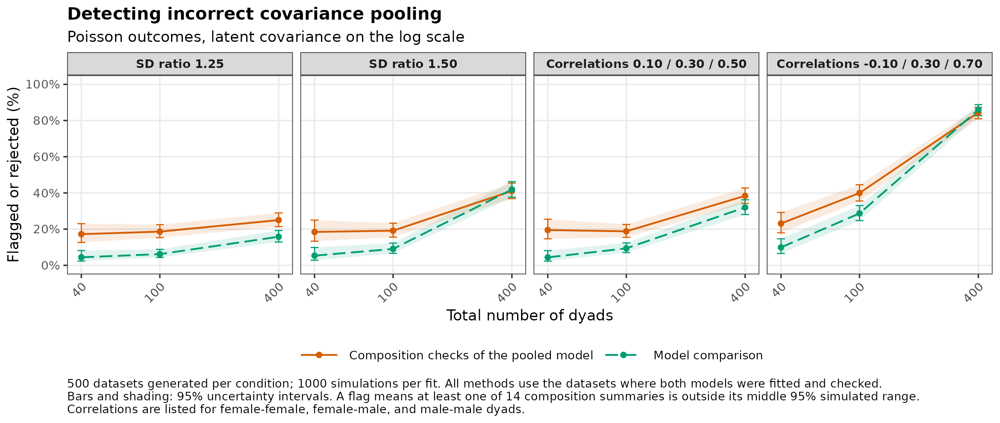
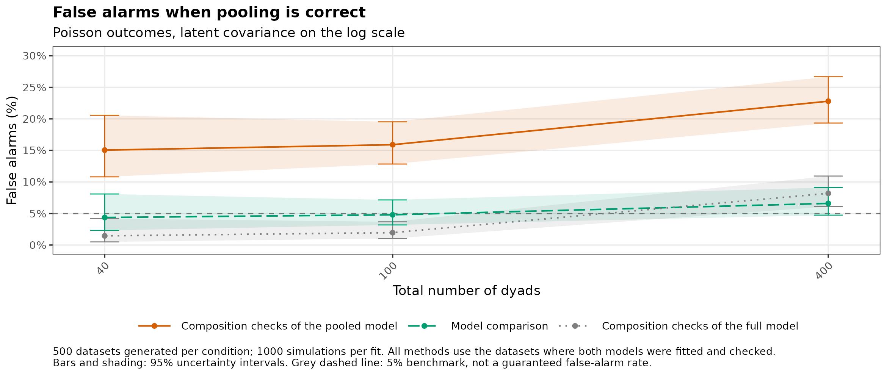
Model settings and checks
Response: Poisson mean; log link.
Datasets with all methods available: 168–212 of 500 at 40 dyads; 397–459 of 500 at 100 dyads; 499–500 of 500 at 400 dyads.
COM-Poisson
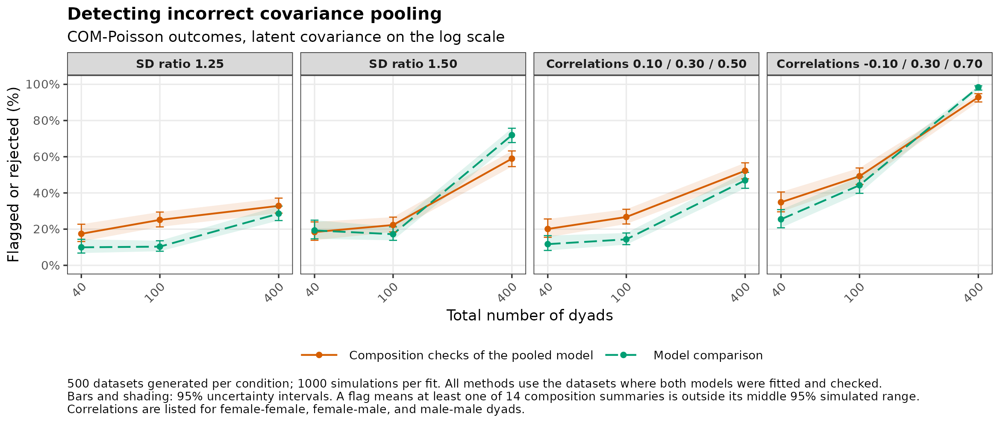
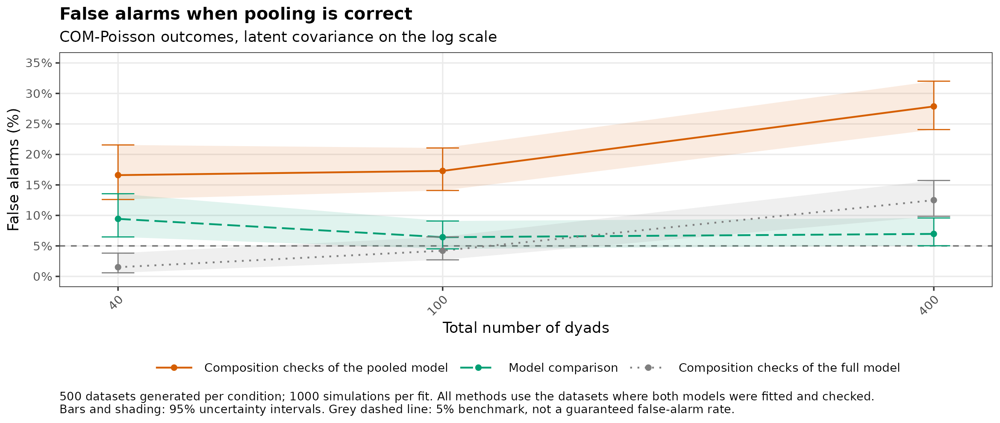
Model settings and checks
Response: phi = 0.5 (nu = 2); log link.
Datasets with all methods available: 223–287 of 500 at 40 dyads; 395–461 of 500 at 100 dyads; 488–492 of 500 at 400 dyads.
Simulations failed for 62 fitted models (sampler overflow or non-finite draws).
Zero-truncated Poisson
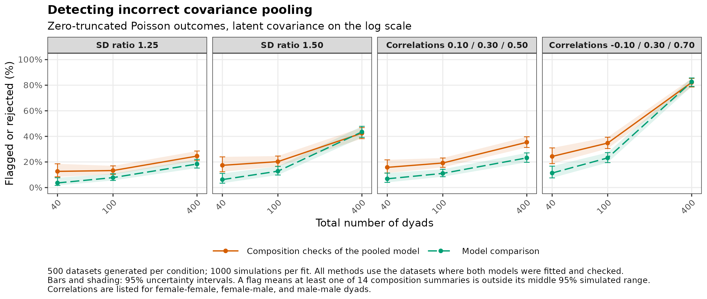
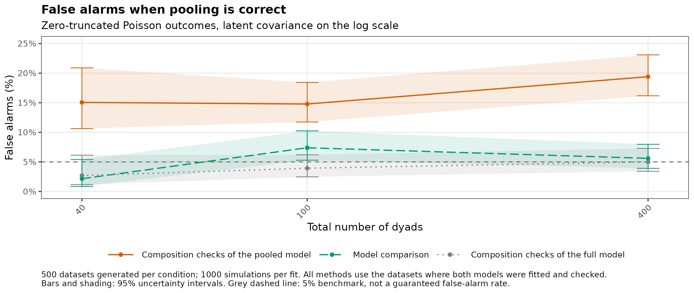
Model settings and checks
Response: Poisson mean; truncated at zero; log link.
Datasets with all methods available: 161–190 of 500 at 40 dyads; 375–443 of 500 at 100 dyads; 499–500 of 500 at 400 dyads.
Tweedie
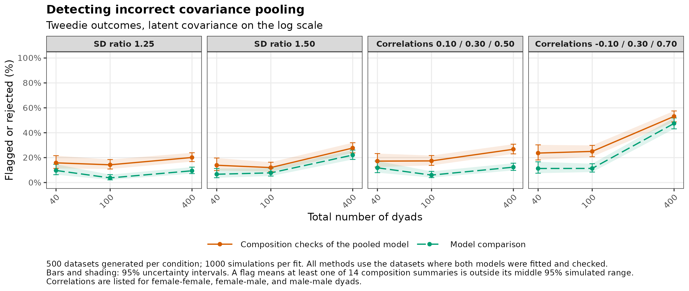
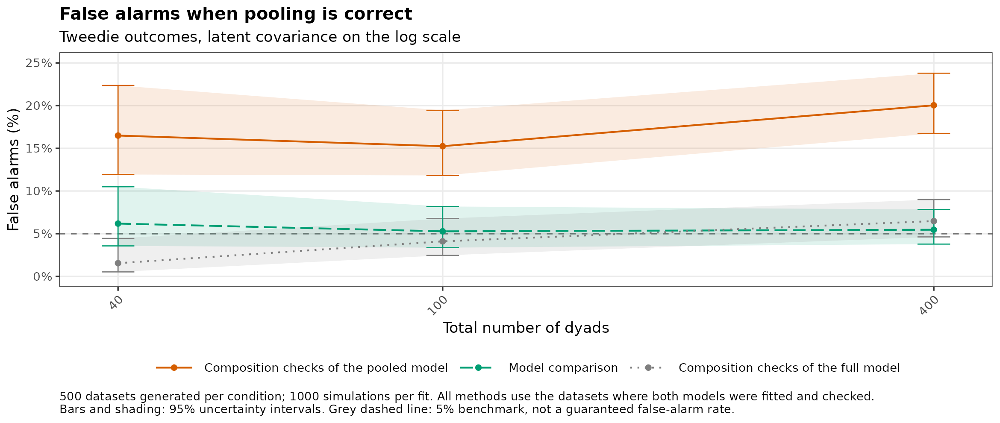
Model settings and checks
Response: phi = 1; power = 1.5; log link.
Datasets with all methods available: 180–196 of 500 at 40 dyads; 283–351 of 500 at 100 dyads; 462–495 of 500 at 400 dyads.
Simulations used an equivalent, faster sampler (details).
Model comparison was unavailable for 1 dataset because the full model had a lower log-likelihood than the pooled model.
Bell
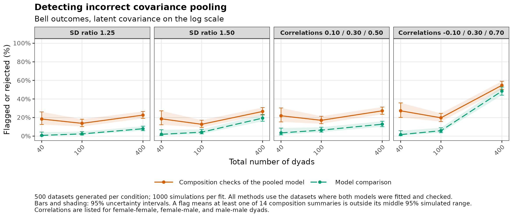
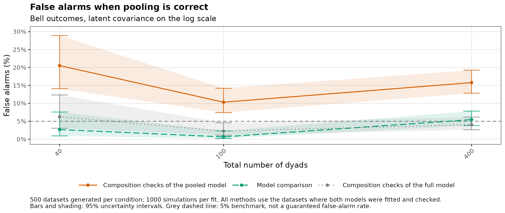
Model settings and checks
Response: Bell mean; log link.
Datasets with all methods available: 102–125 of 500 at 40 dyads; 282–340 of 500 at 100 dyads; 459–499 of 500 at 400 dyads.
Zero-inflated Poisson
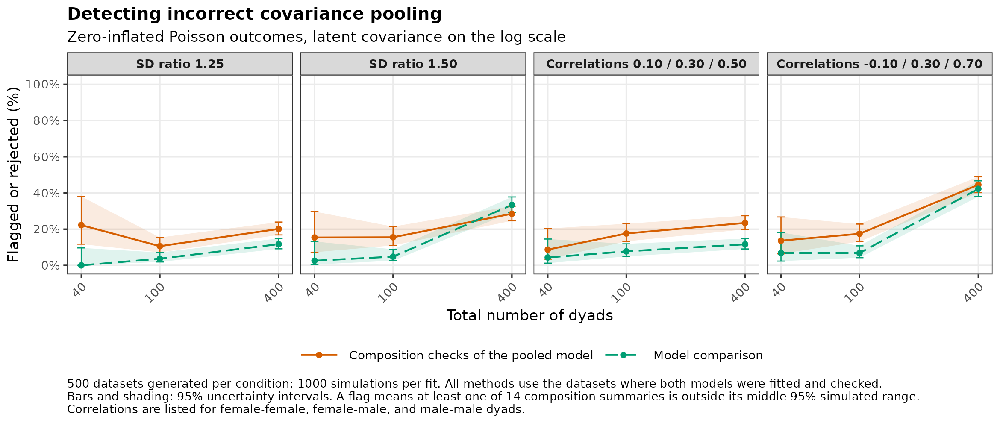
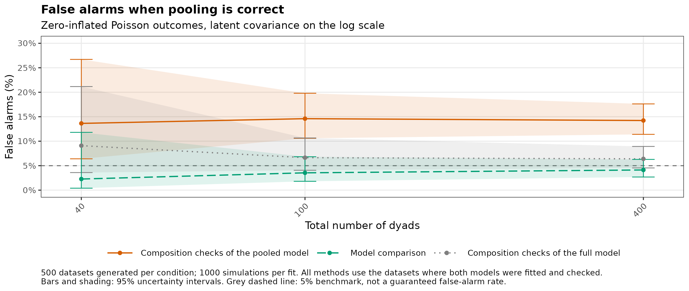
Model settings and checks
Response: Poisson mean; extra-zero probability = 0.25; log link.
Datasets with all methods available: 36–46 of 500 at 40 dyads; 187–235 of 500 at 100 dyads; 470–492 of 500 at 400 dyads.
Both models estimate a zero-inflation intercept without random effects.
Model comparison was unavailable for 9 datasets because the full model had a lower log-likelihood than the pooled model.